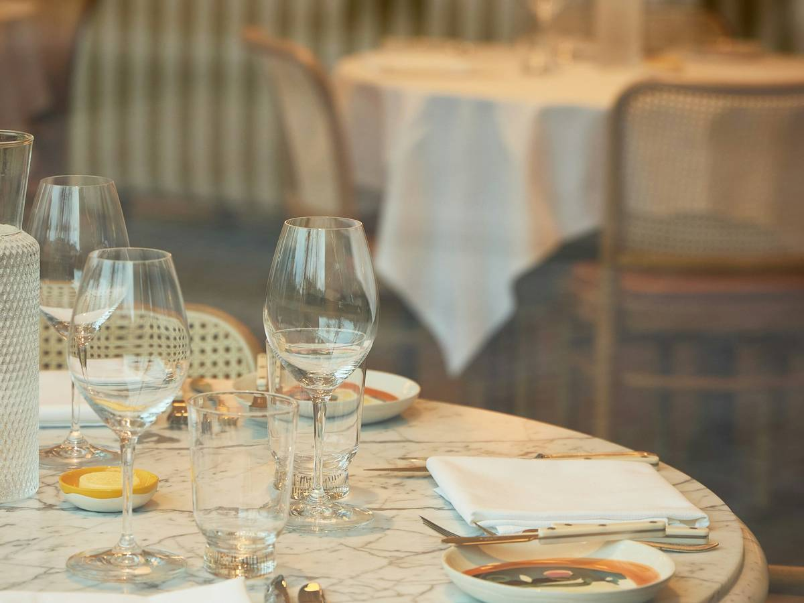
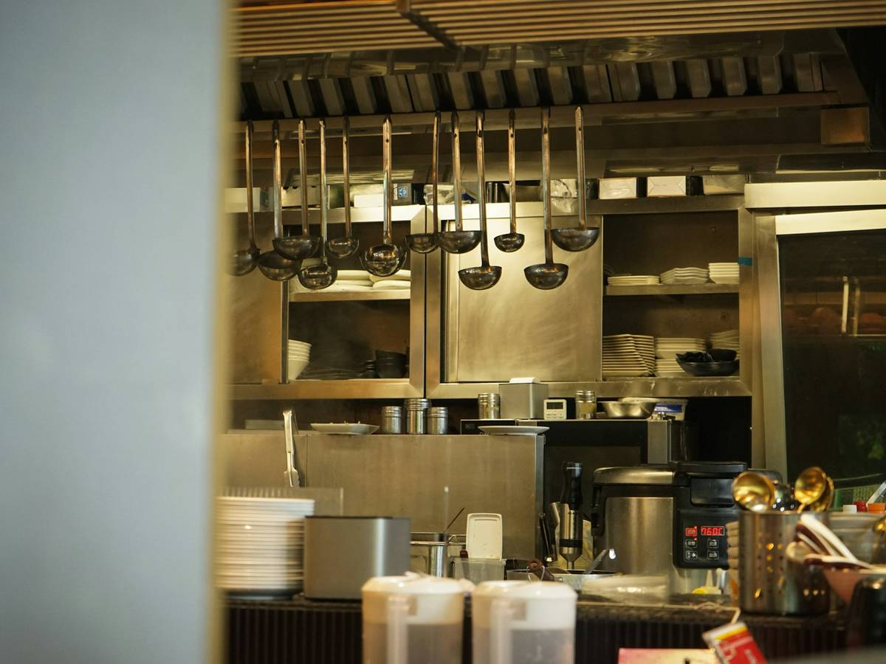
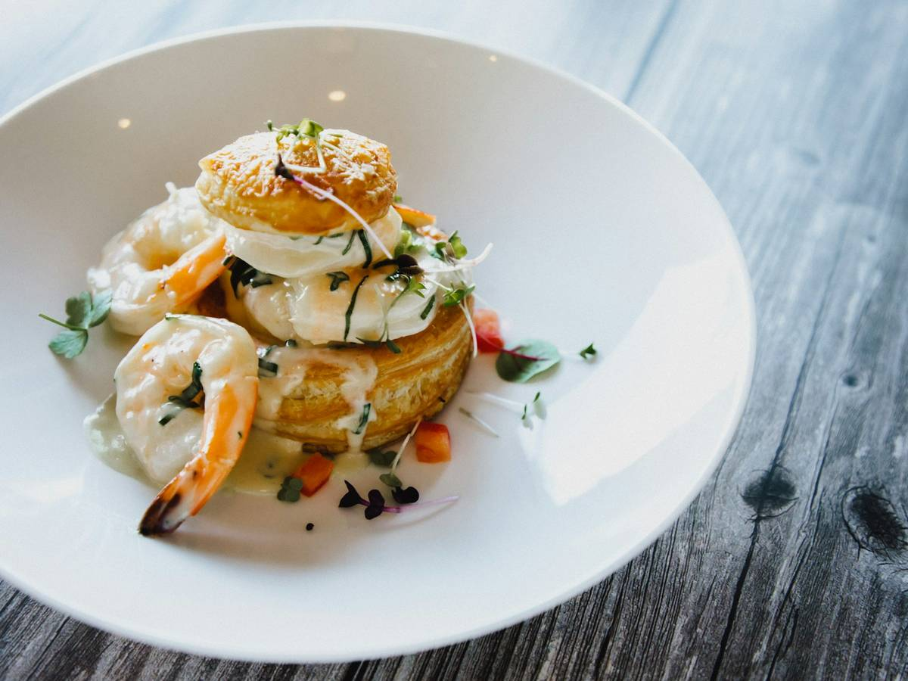

Encina, sal gorda y la mesa puesta cuando llegas.
Parrilla de leña en el centro de Majadahonda. Cuarenta comensales, dos turnos y sobremesa sin prisa. La reserva la coge el asistente, a cualquier hora.
- Dónde
- Calle del Olivar 12 28220 Majadahonda, Madrid
- Teléfono
- 910 00 00 00 Número de ejemplo
- Horario
- 13:00 – 16:00 · 20:00 – 23:30 Cerrado los lunes
- Reservas
- Por el chat, 24 h Asistente IA · demo
Una parrilla, no una carta larga
El fuego manda: se enciende a las once y se apaga cuando sale el último chuletón. Lo demás —el pan, el tomate, el vino de la casa— acompaña. Sala pequeña, mantel de tela y ruido justo para hablar.
- Leña
- Encina del sur de Ávila, brasa viva de once de la mañana a medianoche.
- Aforo
- 40 comensales en sala, 12 en la terraza de atrás cuando acompaña el tiempo.
- Turnos
- Comida a las 13:30 y 14:30. Cena a las 20:30 y 21:30, sin levantar mesa.
- Grupos
- Hasta 10 personas por mesa. Por encima, lo hablamos por teléfono.
El sitio, por dentro
Fotos de ambiente para la demo. El restaurante es ficticio.



La carta, en corto
Cambia con lo que llega al mercado. Esto es lo que casi siempre está.
Para empezar
- Pimientos de cristalA la brasa, con ajo confitado y aceite de arbequina.
- Tomate de temporadaCon ventresca y cebolleta dulce.
- Croquetas de pucheroSeis unidades, masa de dos días.
De la brasa
- Chuletón de vaca maduradaMaduración de 45 días, se sirve al punto y se termina en la piedra.
- Presa ibéricaBellota, con patata asada y pimentón de la Vera.
- Rodaballo salvajeEntero a la parrilla, refrito de ajo y vinagre.
- Verduras al rescoldoLo que haya ese día, con romesco.
Para terminar
- Torrija caramelizadaCon helado de leche merengada.
- Tarta de quesoHorno alto, centro tembloroso.
- Café de pucheroY orujo de la casa si hay tiempo.
Carta de ejemplo para la demo. Sin precios: en la web real los pone el restaurante.
¿Reservamos mesa?
El asistente pregunta día, personas, turno y un teléfono. Tarda menos que una llamada y no da señal de ocupado a las dos y media.